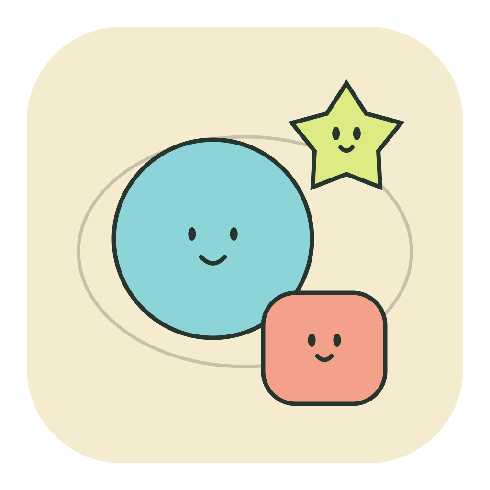
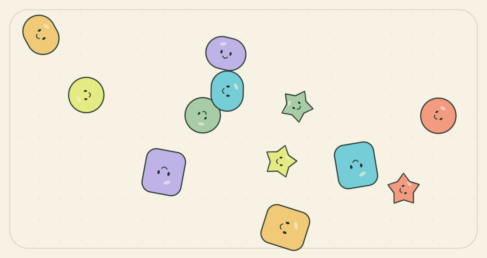

A little room.
A little nonsense.
Pick up a tiny friend and let go. Make a mess, float around, or keep an arrangement that makes you smile.


A picture exported from the app. Every shape can be picked up and moved.
01 / Play
Drag and release to throw. Click empty space to add a friend; hold or drag empty space to gather the group. Up to 24 friends.
02 / Change the mood
Choose Bounce, Float or Orbit. Switch colours, pause to arrange a still scene, or turn on gentle motion in Help. Sound starts off.
03 / Keep a moment
Keep up to six named scenes. Each saved copy stays independent of the live playground. Export a PNG from Help.
Help with your little room
Where are my scenes stored?
Only in Moteplay's local app container on this Mac. There is no account or automatic cloud sync. Saves contain positions, colours and modes, not live velocity or the window pin.
What does the pin do?
It keeps the window above other windows. You can turn it off at any time. Hidden or minimized windows stop animating.
A save could not be opened
The original file is preserved. You can still play, but saving remains paused until you explicitly choose a fresh start in Help. Contact support before deleting anything important. A PNG preserves an image, not an editable scene backup.
Removing a saved scene
The collection asks for confirmation. Removing a saved copy leaves the current playground unchanged; the deleted copy cannot be restored through the app.
Privacy and payment
No accounts, advertising, analytics, developer server, subscription or in-app purchase. Apple handles the paid download. Core play and saving work offline. The optional links on this page and in Help open external services. Read the privacy policy.
사용 방법과 지원
친구를 집어서 놓으면 던져집니다. 빈 곳을 누르거나 끌면 모여들고, 짧게 클릭하면 새 친구가 생깁니다. 친구는 최대 24명, 보관한 장면은 최대 6개입니다.
통통·둥둥·빙글로 움직임을 바꿀 수 있습니다. 멈춤 상태에서 배치한 뒤 ‘장면 보관’을 누르면 현재 놀이터와 독립된 보관본이 생깁니다. 도움말에서는 움직임을 부드럽게 설정하거나 PNG로 저장할 수 있습니다.
데이터는 이 Mac의 앱 전용 공간에만 저장됩니다. 클라우드 동기화나 계정은 없습니다. PNG는 그림만 보관하며 편집 가능한 장면 백업은 아닙니다. 읽지 못하는 파일은 자동으로 덮어쓰지 않습니다.
문제가 있으면 지원 이메일로 앱 버전, macOS 버전과 재현 순서를 알려주세요. 비밀번호나 개인 파일을 보내지 않아도 됩니다. 개인정보처리방침
Contact
Include the app version, macOS version and steps that led to the issue. Do not send passwords or personal files you do not intend to share.